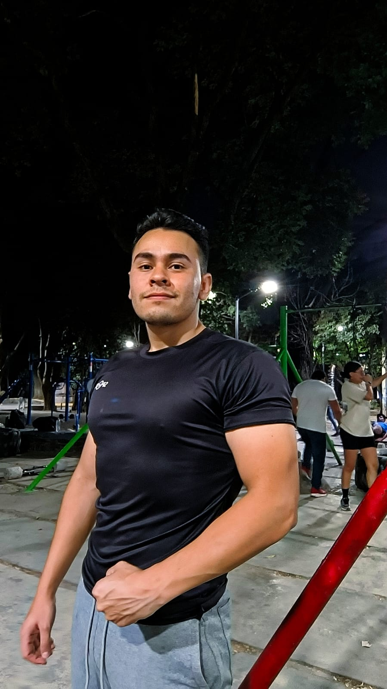

Hi! I'm Lorenzo. I am a mathematician from the School of Sciences and currently a Graduate Student in Mathematical Sciences at the Mathematics Institute, UNAM.
Originally from Tecate, B.C., my journey into this discipline began in high school through competitions organized by the UABC. After a gap year that proved decisive in defining my vocation, my professional interest turned entirely toward mathematics.
My academic work lies at the intersection of Analytic Number Theory and Complex Analysis, areas that captivated me from the start due to their depth and theoretical beauty. Specializing in these fields during my undergraduate studies consolidated my mathematical perspective, making them the central focus of my research.
Beyond research, I dedicate a significant portion of my time to teaching at the School of Sciences (UNAM). I am passionate about scientific outreach and leveraging audiovisual tools to democratize knowledge. I am an active member of the Mathematics Institute' outreach team ("Festival Matemático") and currently organize the Graduate Student Seminar (Seminario de Becarios), where I manage logistics, promotion, and the technical production of the sessions.
When I’m not doing math, I enjoy experimenting in the kitchen and maintaining my physical health through calisthenics.

You can reach me via my institutional email or by sending a direct message below: